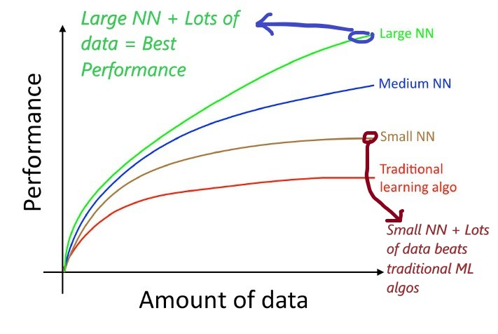

Machine Learning Yearning

As seen in the above graph, a large Neural Network trained on lots of data gives the best performance. However, training a large Neural Network and getting more data are both surprisingly complex tasks and this book discusses both in detail.
The focus of this book is supervised learning problems. It helps you read clues left by machine learning problems to make optimal decisions that lead your company to success.
After reading this book, you will have a deep understanding of how to set the technical direction for a machine learning project. It will also help you see that a few changes in prioritization can have a huge effect on your team’s productivity.
This book is divided into the following 9 sections: